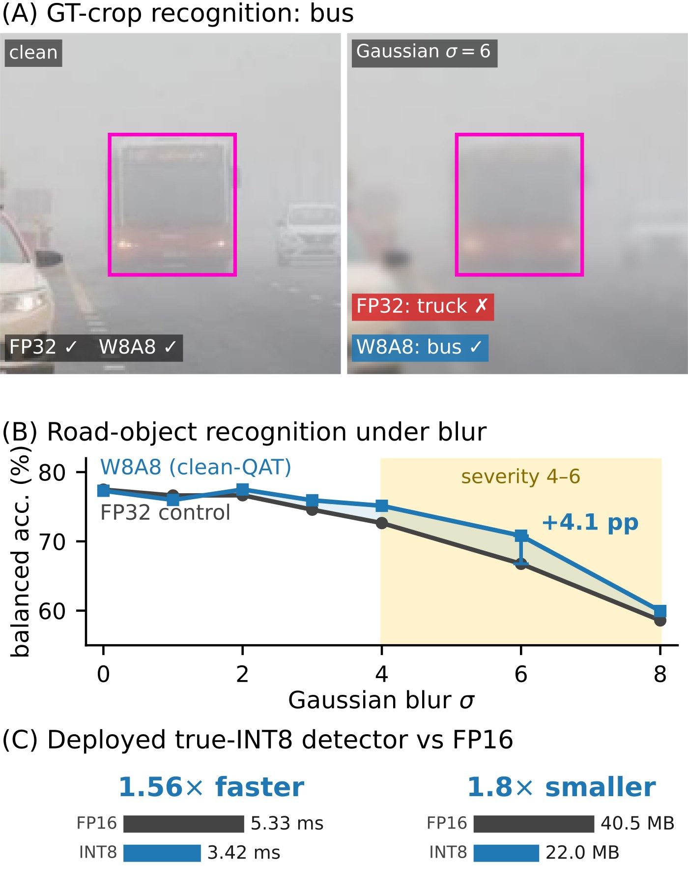
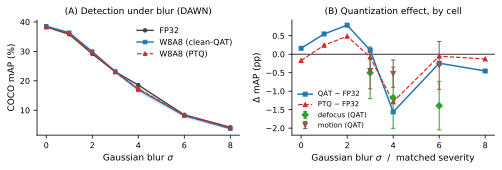
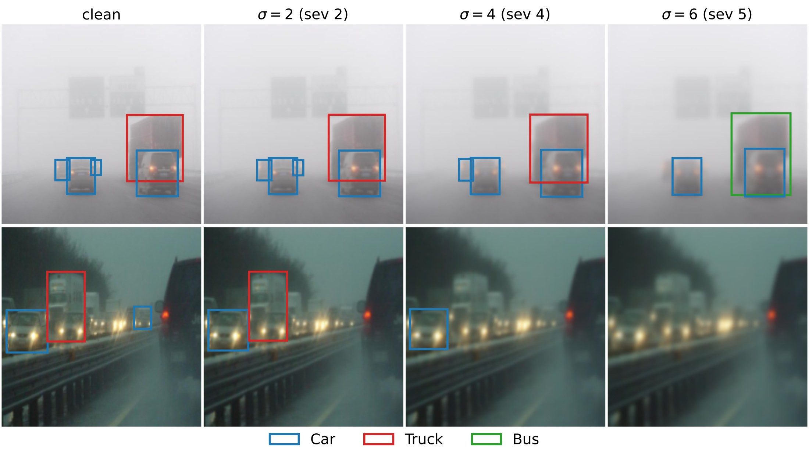
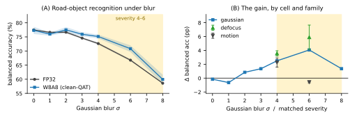
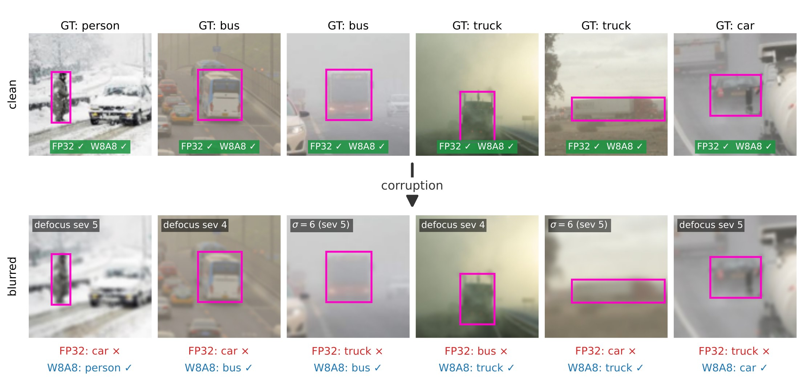

Quantization and Corruption Robustness
in Deployed Road‑Scene Perception
Université Paris-Saclay, CEA-List

8-bit quantization is usually assumed to make perception models more fragile. On real adverse-weather driving images, it does not: the quantized detector is as robust to blur as its full-precision counterpart, and a quantized recognition encoder is more robust, while both run faster and smaller as true INT8 models.
Quantization lowers weight and activation precision to fit neural networks onto automotive hardware, and is assumed to cost robustness to degraded camera inputs. For road-scene perception, that cost has never been measured under matched training budgets. On an adverse-weather driving benchmark, a separate 8-bit quantization-aware trained recognition encoder is more accurate under moderate-to-heavy Gaussian and defocus blur than its full-precision counterpart by several points of balanced accuracy. It saw no synthetically corrupted image in training and blur only at evaluation. Training does the work, not the arithmetic: a control trained with injected noise of matched magnitude does not reproduce the gain, and training-free quantization reproduces it only in part. We link the effect to a shared feature subspace: quantization noise and blur perturb the same high-rank directions of the representation. A model trained to remain accurate despite its own quantization noise therefore inherits accuracy under blur. The gain is confined to a severity window and reverses once the input is too degraded to read. The detector that ships in the vehicle loses no aggregate robustness under the same quantization and runs faster and smaller as a true INT8 model. The recognition gain therefore comes at no measurable cost to the deployed detector.
One strict rule: no corrupted image in training
Every model is trained and calibrated on uncorrupted images only. Blur is injected at evaluation, at graded severities, so any change in robustness is emergent rather than trained in.
DAWN
Traffic images captured in real fog, sandstorm, rain and snow. We keep Car, Truck, Bus and Person (1,026 images), split by image so no scene leaks.
RT-DETR R18
COCO-pretrained, 640×640. FP32, W8A8 QAT and W8A8 PTQ all derive from one converged detector with the same data, schedule and seeds.
DINOv2 ViT-S/14
A separate encoder with a linear head on ground-truth object crops. LSQ W8A8 on the 48 transformer linear layers, backbone frozen.
Blur at evaluation only
Gaussian, defocus and motion blur at graded severities on pixel-identical inputs for every variant. Three seeds throughout.
The quantized detector loses no blur robustness
Under a budget-matched protocol, the three detector variants track each other across the entire blur sweep, for defocus and motion blur as well as Gaussian. Corruption degrades detection heavily, as expected, but quantization adds nothing to it, for the training-free PTQ variant as much as for QAT. With three seeds this is a bound on the difference rather than a formal equivalence test.

Fine-tuning does not set the robustness profile in advance: the zero-shot COCO checkpoint, the fine-tuned detector and its FP32 continuation degrade on one schedule. The one open concern is the rarest class: at Gaussian σ = 4, every quantized run scores below every full-precision run on Bus (24 test instances), which we cannot separate from sampling noise at that size.
Detector predictions under increasing blur

A quantized encoder becomes more robust to blur it never saw
Evaluated in isolation, recognition behaves differently from detection. A W8A8 DINOv2 encoder, trained with LSQ on uncorrupted crops of DAWN road objects, matches its FP32 control on uncorrupted input and is more accurate under moderate-to-heavy Gaussian and defocus blur. A paired, class-stratified bootstrap separates these gains from zero, and they survive Benjamini–Hochberg control.

| Condition | FP32 | W8A8 | Δ (pp) | 95% CI | p |
|---|---|---|---|---|---|
| Uncorrupted | 77.5 | 77.3 | −0.2 | [−2.6, +2.4] | n.s. |
| Gaussian σ = 4 (sev. 4) | 72.6 | 75.1 | +2.5 | [+0.5, +4.7] | .008 |
| Gaussian σ = 6 (sev. 5) | 66.8 | 70.8 | +4.1 | [+1.0, +7.4] | .004 |
| Gaussian σ = 8 (sev. 6) | 58.6 | 59.9 | +1.4 | [−2.5, +5.2] | n.s. |
| Defocus sev. 4 | 70.1 | 73.7 | +3.6 | [+0.3, +7.0] | .015 |
| Defocus sev. 5 | 61.4 | 67.3 | +5.9 | [+2.8, +9.1] | .0002 |
| Motion sev. 4 | 69.2 | 71.4 | +2.3 | [−1.7, +4.4] | n.s. |
| Motion sev. 5 | 67.1 | 66.5 | −0.6 | [−3.9, +1.4] | n.s. |
Balanced accuracy (%), 3 seeds, with paired class-stratified crop-bootstrap 95% confidence intervals. Differences are computed from unrounded values. Motion intervals use a fresh draw of its stochastic kernel, so they are not centred on the printed Δ.

What the gain is, and is not
- A balanced-accuracy gain carried by the minority classes. The dominant car class is already near ceiling, so plain accuracy slips by up to 2.9 pp. Both are reported in the paper.
- Gaussian and defocus blur, not blur in general. Motion blur, the noisiest condition, shows no reliable gain.
- Not a confidence gain. Calibration and selective prediction are slightly worse under quantization, so score thresholds should be recalibrated.
- A standalone encoder. It is not RT-DETR's classification branch, which was not instrumented.
Quantization noise and blur share a feature subspace
Projected onto the singular basis of the full-precision features, the quantization residual and the blur residual land in the same place: both concentrate in the high-rank tail of the representation, and their per-rank profiles fall along a common line. Spectrally, quantization noise resembles a scaled-down moderate blur. A model trained to stay accurate despite its own quantization noise in that tail plausibly carries the invariance over to blur.

Overlap is a precondition for transfer, not a measure of it: sensor noise and contrast overlap with quantization as strongly as blur yet gain far less. The analysis is correlational, so this is the account most consistent with the data, not one isolated causally. The simpler explanations are excluded:
Matched-noise control
Does not reproduceUniform noise matched to each quantizer's step size improves uncorrupted accuracy (+1.8 pp, the signature of a regularizer) yet stays flat to negative exactly where QAT gains.
Training-free quantization
PartialPTQ of the same model shows no sustained Gaussian gain and loses uncorrupted accuracy, though it inherits most of the defocus gain. Training does the work, not the arithmetic alone.
Input smoothing
Ruled outThe quantized and full-precision models have near-identical frequency sensitivity, far too close to account for the gain.
Boundary flattening
Ruled outThe class-balanced margin gap is positive through the window and turns negative only past it, the pattern of corruption-invariant features (single-seed probe).
Rank reduction
Ruled outEffective feature rank is unchanged (90.4 vs 90.7): the model gains invariance to the shared tail rather than discarding dimensions.
Simulated arithmetic
Ruled outRe-running the whole sweep on true-integer kernels reproduces the fake-quant result at every severity, window gains included.
The gain lives in a severity window
Absent at mild blur, peaking at moderate-to-heavy blur, then reversing sharply once the input is too degraded to classify at all. The enlarged margin helps only while the blurred input remains readable. PTQ shows no such rise.
Shaded rows: the severity 4–6 window shaded in the figures.
| Gaussian σ | Regime | FP32 | Δ QAT | Δ PTQ |
|---|---|---|---|---|
| 0 | uncorrupted | 77.5 | −0.2 | −3.3 |
| 2 | rising | 76.7 | +0.8 | −1.9 |
| 4 | rising | 72.6 | +2.5 | +1.3 |
| 6 | peak | 66.8 | +4.1 | −0.3 |
| 8 | positive (n.s.) | 58.6 | +1.4 | −1.7 |
| 10 | reversal | 56.1 | −2.6 | −7.0 |
| 14 | reversal | 46.0 | −6.0 | −6.4 |
Balanced accuracy (%) on DAWN ground-truth crops, 3 seeds; Δ against FP32 in points.
Faster and smaller as a true INT8 model
The vendor path is not competitive here: TensorRT's INT8 engines run slower than its own FP16 engine, because quantize/dequantize transitions between integer and floating-point regions break the whole-graph fusion FP16 relies on. Custom CUTLASS kernels fold rescaling and activation into the kernel epilogues and capture the pipeline as one CUDA graph. Against the identical pipeline in FP16, the integer detector scores within −0.2 to +2.0 mAP in all thirteen conditions, which we read as a tie.
RT-DETR detector, median latency (ms) at 640×640
| Precision | batch 1 | batch 4 | batch 8 | batch 16 | Weights |
|---|---|---|---|---|---|
| FP16 (CUDA graph) | 5.33 | 22.0 | 47.1 | 99.0 | 40.5 MB |
| True INT8 (ours) | 3.42 | 14.3 | 30.7 | 65.7 | 22.0 MB |
| Speed-up | 1.56× | 1.54× | 1.54× | 1.51× | 1.8× |
Convolution and linear layers run in INT8 and the rest in FP16, hence 1.8× rather than 2× smaller weights.
DINOv2 encoders, end-to-end true-INT8 speed-up over FP16
| Encoder | batch 1 | batch 8 | batch 32 |
|---|---|---|---|
| ViT-S/14 (evaluated) | 1.36× | 1.58× | 1.85× |
| ViT-B/14 | 1.47× | 1.96× | 2.01× |
| ViT-L/14 | 1.77× | 2.03× | 2.13× |
NVIDIA RTX 2000 Ada laptop GPU, CUDA-graph capture, median latency, stack-matched baselines that isolate precision. The speed-up grows with model size.
Scope
- One benchmark (DAWN), one detector and one separate, unintegrated encoder; both held-out sets are modest and car-dominated.
- The controlled sweep is blur-only, so other degradations remain open.
- The mechanism is correlational: the noise-regularization alternative is excluded, activation clipping is not. The account predicts the window should move with bit-width, which is untested.
- Latency comes from one laptop-class GPU; power is unmeasured.
Reproduction code
BibTeX
@inproceedings{bouguerra2026perception,
title = {Quantization and Corruption Robustness in Deployed Road-Scene Perception},
author = {Bouguerra, Aymen and Radermacher, Ansgar and Arnez, Fabio and Mraidha, Chokri},
booktitle = {IEEE International Conference on Vehicular Electronics and Safety (ICVES)},
address = {Cochabamba, Bolivia},
year = {2026}
}
Related work
@inproceedings{bouguerra2026lessprecise,
title = {Less Precise Can Be More Reliable: A Systematic Evaluation
of Quantization's Impact on {VLMs} Beyond Accuracy},
author = {Bouguerra, Aymen and Montoya, Daniel and Gomez-Villa, Alexandra
and Mraidha, Chokri and Arnez, Fabio},
booktitle = {International Conference on Machine Learning (ICML)},
year = {2026}
}